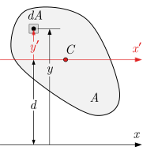
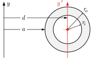
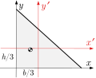
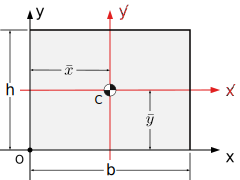
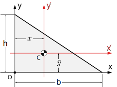

The parallel axis theorem relates the moment of inertia of a shape about an arbitrary axis to its moment of inertia about a parallel centroidal axis.
This theorem is particularly useful because if we know the centroidal moment of inertia of a shape, we can calculate its moment of inertia about any parallel axis by adding an appropriate correction factor. Alternately, if we know the moment of inertia about an axis, we can find the associated centroidal moment of inertia by subtracting the same factor.
The centroidal moment of inertia of common shapes are well known, and readily available in tables of properties of shapes such as Subsection 10.3.2.
Subsection10.3.1Derivation
We will use the defining equation for the moment of inertia (10.1.3) to derive the parallel axis theorem.
The diagram shows an arbitrary shape, and two parallel axes: the \(x'\) axis, drawn in red, passes through the centroid of the shape at \(C\text{,}\) and the \(x\) axis, which is parallel and separated by a distance, \(d\text{.}\) The shape has area \(A\text{,}\) which is divided into square differential elements \(dA\text{.}\) The distance from the \(x\) axis to the element \(dA\) is \(y\text{,}\) and the distance from the \(x'\) axis is \(y'\text{.}\)
By (10.1.3), the moment of inertia of the shape about the \(x\) and \(x'\) axes are
\begin{align*}
I_x \amp = \int_A y^2\ dA \amp \bar{I}_{x'} \amp = \int_A (y')^2\ dA
\end{align*}
Figure10.3.1.Definitions for the parallel axis theorem.
The first is the value we are looking for, and the second is the centroidal moment of inertia of the shape. These two are related through the distance \(d\text{,}\) because \(y= d + y'\text{.}\) Substituting that relation into the first equation and expanding the binomial gives
\begin{align*}
I_x \amp = \int_A (d + y')^2 dA\\
\amp = \int_A \left[(y')^2 + 2\ y'\ d + d^2 \right] dA\\
\amp = \int_A (y')^2 dA + 2 d \int_A y' dA + d^2 \int_A dA\text{.}
\end{align*}
You should recognize these three integrals. The first is the centroidal moment of inertia of the shape \(\bar{I}_{x'}\text{,}\) and the third is the total area of the shape, \(A\text{.}\) The middle integral is \(Q_{x'}\text{,}\) the first moment of area (10.1.2) with respect to the centroidal axis \(x'\text{.}\) So we have,
Furthermore, \(Q_{x'}\) is exactly zero because the \(x'\) axis passes through the centroid, meaning that elements of area above and below the centroidal axis exactly balance and cancel each other out. After dropping the middle term we get the version of the parallel axis theorem which you should remember,
\begin{equation}
I = \bar{I} + A d^2\text{.}\tag{10.3.1}
\end{equation}
The subscripts designating the \(x\) and \(x'\) axes have been dropped because this equation is applicable to any direction of parallel axes, not specifically horizontal axes.
This equation says that you find the moment of inertia of a shape about any axis by adding \(Ad^2\) to the parallel centroidal moment of inertia. You can consider the \(Ad^2\) term as ‘correction factor’ to account for the distance of the axis from the centroid. This term is always positive, so the centroidal moment of inertia is always the minimum moment of inertia for a particular axis direction.
The next example show how the parallel axis theorem is typically used to find the moment of inertia of a shape about an axis, by using then centroidal moment of inertia formulas found in Subsection 10.3.2.
Example10.3.2.Circular Ring.

Use the parallel axis theorem to find the moment of inertia of the circular ring about the \(y\) axis.
The dimensions of the ring are \(R_i = \mm{30}\text{,}\)\(R_o = \mm{45}\text{,}\) and \(a = \mm{80}.\)
To apply the parallel axis theorem, we need three pieces of information
The centroidal moment of inertia of the ring, \(I_y\text{,}\)
the area of the ring, \(A\text{,}\)
the distance between the two parallel axes, \(d\text{.}\)
The area of the ring is found by subtracting the area of the inner circle from the area of the outer circle. The centroidal moment of inertia is calculated similarly using (10.2.10). The distance between the \(y\) and \(y'\) axis is available from the diagram. Inserting these values into the parallel axis theorem gives,
It is interesting that the ‘correction factor’ is more than 20 times greater than the centroidal moment of inertia of the ring. This indicates the importance of the distance squared term on the moment of inertia of a shape.
The parallel axis theorem can also be used to find a centroidal moment of inertia when you already know the moment of inertia of a shape about another axis, by using the theorem ‘backwards’,
\begin{align*}
I \amp = \bar{I} + Ad^2 \amp \amp \rightarrow \amp \bar{I} \amp = I - A d^2\text{.}
\end{align*}
Example10.3.3.Centroidal Moment of Inertia of a Triangle.

Find the centroidal moment of inertia of a triangle knowing that the moment of inertia about its base is
\begin{equation*}
I_x = \frac{1}{12} b h^3\text{.}
\end{equation*}
This interactive allows you to change the location and size of the grey rectangle. Try to compute both the centroidal area moment of inertia \(\bar{I}_{x'}\) and \(\bar{I}_{y'}\) and the area moment of inertia about the system axes \(I_x\) and \(I_y\)
The interactive calculates the moment of inertia using the parallel axis theorem \(I = \bar{I} + A d^2\text{.}\) Note that a centroidal moment of inertia is smaller than the moment of inertia about any corresponding parallel axis.
Move the red dots to change the size and location of the rectangle.
Figure10.3.6.Moment of Inertia of a Rectangle
Example10.3.7.Interactive: Semi-Circle.
Use this interactive to practice computing the area moments of inertia of the semi-circle about the centroidal \(x'\) axis, the bottom edge \(x''\text{,}\) and the system \(x\) axis. You can change the location and size of the semicircle by moving the red points..
The interactive calculates the moment of inertia of a semi-circle about three different axes using the parallel axis theorem \(I = \bar{I} + A d^2\text{.}\) The distance term \(d\) represents the distance between the axis of interest and a parallel axis passing through the centroid of the shape.
Move the red dots to change the size and location of the semi-circle.
Figure10.3.8.Moment of Inertia of a Semi-Circle
Subsection10.3.2Moments of Inertia Table
This table summarizes the properties of the common shapes discussed previously.
Table10.3.9.Moments of Inertia of Common Shapes
Shape
Centroid
Centroidal MOI
\(I_x, \ I_y\)

\((b/2, h/2)\)
\(\bar{I}_{x'} = \dfrac{1}{12} b h^3\)
\(\bar{I}_{y'} = \dfrac{1}{12} b^3 h\)
\(I_{x} = \dfrac{1}{3} b h^3\)\(I_{y} = \dfrac{1}{3} b^3 h\)

\((b/3, h/3)\)
\(\bar{I}_{x'} = \dfrac{1}{36} b h^3\)\(\bar{I}_{y'} = \dfrac{1}{36} b^3 h\)
\(I_x = \dfrac{1}{12} b h^3\)\(I_y = \dfrac{1}{12} b^3 h\)